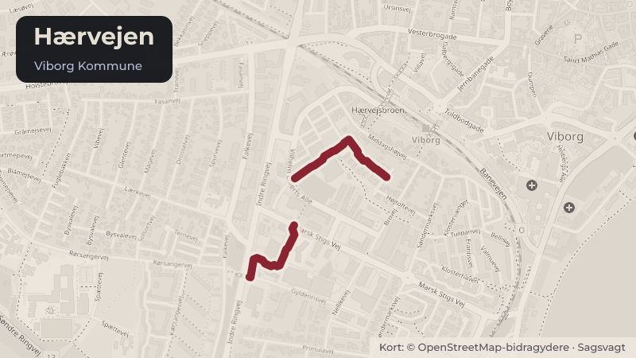

Besluttet 27. maj, Byrådet, Viborg
Medlemskab Udvikling Hærvejen 2026-2029

Kort fortalt
- Forslaget
- Viborg Kommune årligt afsætter 250.000 kr. til medlemskab af Udvikling Hærvejen i
- Udgiften på årligt 250.000 kr. i givet fald finansieres af driftsbeløbet afsat til
- Hvem
- Byrådet, Viborg Kommune
- Hvornår
- Onsdag 27. maj 2026
- Status
- Besluttet. Indstillingen fra Økonomi- og Erhvervsudvalget godkendes.
Er noget forkert her? Skriv til os
Læs hele sagen Kommunens egen tekst
Indstilling
Kommunaldirektøren forslår, at Økonomi- og Erhvervsudvalget tager stilling til, om
udvalget indstiller til byrådet,
1. at Viborg Kommune årligt afsætter 250.000 kr. til medlemskab af Udvikling Hærvejen i
perioden 2026-2029, og
2. at udgiften på årligt 250.000 kr. i givet fald finansieres af driftsbeløbet afsat til
udviklingspuljen under Økonomi- og Erhvervsudvalgets politikområde ”Politisk
organisation” i hvert af årene 2026-2029.
Behandling i Økonomi- og Erhvervsudvalget 20. maj 2026
Økonomi- og Erhvervsudvalget indstiller til byrådet,
1. at Viborg Kommune årligt afsætter 250.000 kr. til medlemskab af Udvikling Hærvejen i
perioden 2026-2029, og
2. at udgiften på årligt 250.000 kr. finansieres af driftsbeløbet afsat til udviklingspuljen
under Økonomi- og Erhvervsudvalgets politikområde ”Politisk organisation” i hvert af
Sagsfremstilling
Historik
Foreningen Udvikling Hærvejen blev dannet i 2021 af 15 kommuner, og foreningen har sit
sekretariat på Viborg Rådhus. Byrådet besluttede pba. af en ny strategiproces for Udvikling
Hærvejen i 2025 alene at betale for 1 års medlemskab, da det på daværende tidspunkt var på
tale at ændre i kontingentstrukturen. Strategiprocessen forventes afsluttet medio 2026, men
der forventes ingen ændringer i kontingentstrukturen.
Inddragelse og høring
Intet.
Beskrivelse
Udvikling Hærvejen er en forening dannet af kommuner langs Hærvejens vandre- og
cykelruter, der arbejder for at udvikle Hærvejen som et sammenhængende turist- og
fritidsområde. Medlemmerne er Hjørring, Jammerbugt, Vesthimmerland, Frederikshavn,
Brønderslev, Aalborg, Rebild, Mariagerfjord, Viborg, Silkeborg, Ikast-Brande, Vejle, Haderslev,
Aabenraa og Vejen Kommuner.
Viborg Kommunes borgmester er født medlem af foreningens repræsentantskab.
Foreningen arbejder med 5 kerneindsatser for udviklingen af hærvejen.
Kvalitetsløft af vandre- og cykelruten
Udviklingen af overnatningskapacitet og service
Et skarpt brand og styrket formidlingsindsats
Hærvejsknudepunkter
Bedre data og monitorering
I løbet af første strategiperiode har samarbejdet med Nordea Fonden medført betydelige
investeringer i Hærvejen, også i Viborg Kommune. Således er der sikret investering i f.eks. i
velkomstcenter for Hærvejen i Domkirkeområdet i Viborg og naturplads i Skelhøje for i alt mere
end 20 mio. kr.
Udvikling Hærvejen har gennem 2025 og 2026 arbejdet med udvikling af ny strategi, og dette
arbejde forventes afsluttet medio 2026.
Alternativer
Intet.
Tidsperspektiv
Intet.
Økonomiske forhold og konsekvenser
Udgiften er ved en fejl ikke medtaget ifm. budgetlægningen for 2026-2029.
Juridiske og planmæssige forhold
Intet.
Beslutning
Indstillingen fra Økonomi- og Erhvervsudvalget godkendes.
Kilde: Viborg Kommune, Byrådet, referat fra mødet onsdag 27. maj 2026, punkt 18. Læs den originale sag hos kommunen.
Steder i sagen: Hærvejen